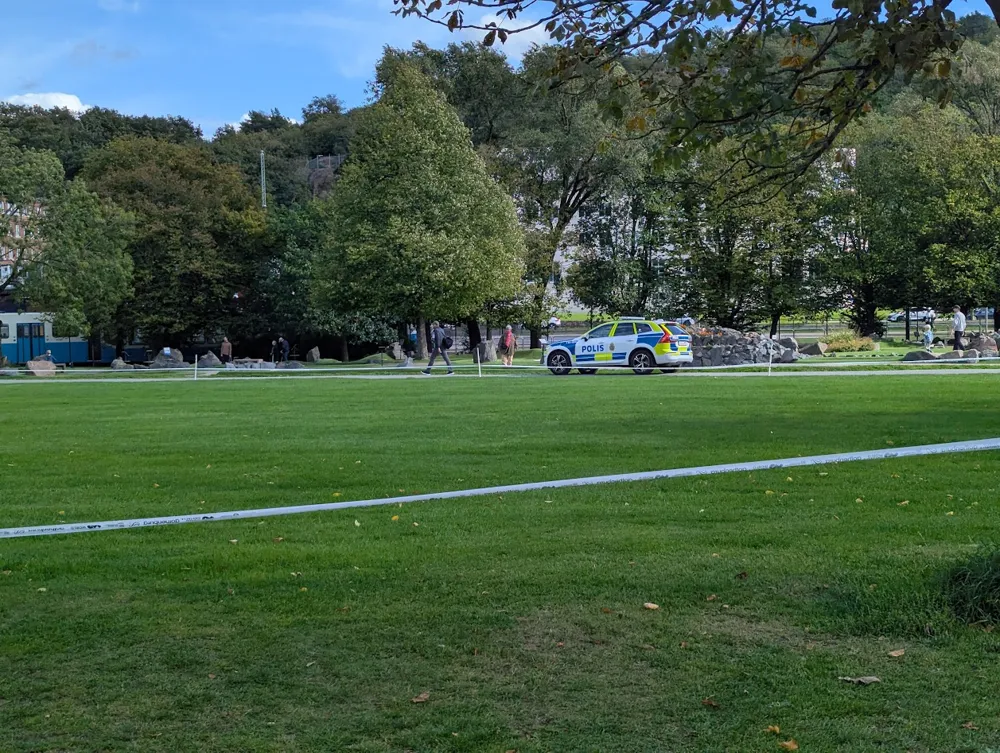

Politik

Ny lag gör gängkriminella inte svenska medborgare
Gunnar Strömmer (M) avslöjade under regeringens senaste presskonferens deras senaste lagförslag. Förslaget skulle göra så att personer som har varit kriminellt aktiv i ett gäng eller interagerat med någon som någonsin varit kriminellt aktiv i ett gäng, inte längre är svenska medborgare. Thomas Bodström (S) är tidigare justitieminister och skrev i lördags en debattartikel till Aftonbladet där han uttrycker sin avsky kring lagförslaget. Försvarare av lagförslaget pekar till undersökningen som regeringen tillsatte den 26 maj och som uppskattar en minskning av kriminell aktivitet hos gängkriminella med 0.23 promille. Debattartikeln speglar en större klyfta bland det svenska folket kring hur hårt gängkriminella bör straffas.
Lagförslaget ger förslag på hur man skulle göra sig av med de nya nationslösa. Ett av dessa som har fått stor kritik är att skicka alla mobsters till Åland. Men kritiker ogillar idén att göra finska öar till moderna straffkolonier. Om lagförslaget blir klubbat igenom tror Bodström och andra Löken pratade med att det kan vara en vändpunkt för många väljare vilket kan vara det sista regeringen vill höra med valcykeln bara ett år bort.